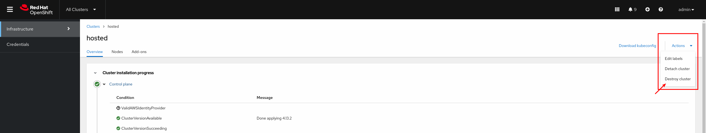
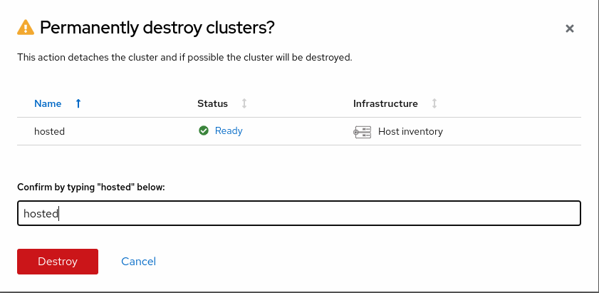

Destroying the Hosted Cluster
In this section we will cover how a hosted cluster can be destroyed from the Web Console and from the CLI.
Destroying the Hosted Cluster from the Web Console
-
Access the OpenShift Console and login with the OpenShift admin credentials you got in the lab’s email.
-
On the top bar, next to the Red Hat OpenShift logo, make sure
All Clustersis selected. This will show us theMultiCloudconsole. -
Click on the cluster named
hosted, that will get you to the cluster view. Click onActions→Destroy cluster. -
Confirm the operation and click on
Destroy. -
It may take up to 5 minutes for the hosted cluster to be destroyed.
Destroying the Hosted Cluster from the CLI
-
Remove the ManagedCluster resource
oc --kubeconfig ~/hypershift-lab/mgmt-kubeconfig delete managedcluster hostedThis command can take up to 5 minutes to complete. managedcluster.cluster.open-cluster-management.io "hosted" deleted -
Delete the HostedCluster resource
oc --kubeconfig ~/hypershift-lab/mgmt-kubeconfig -n hosted delete hostedcluster hostedThis command can take up to 5 minutes to complete. hostedcluster.hypershift.openshift.io "hosted" deleted